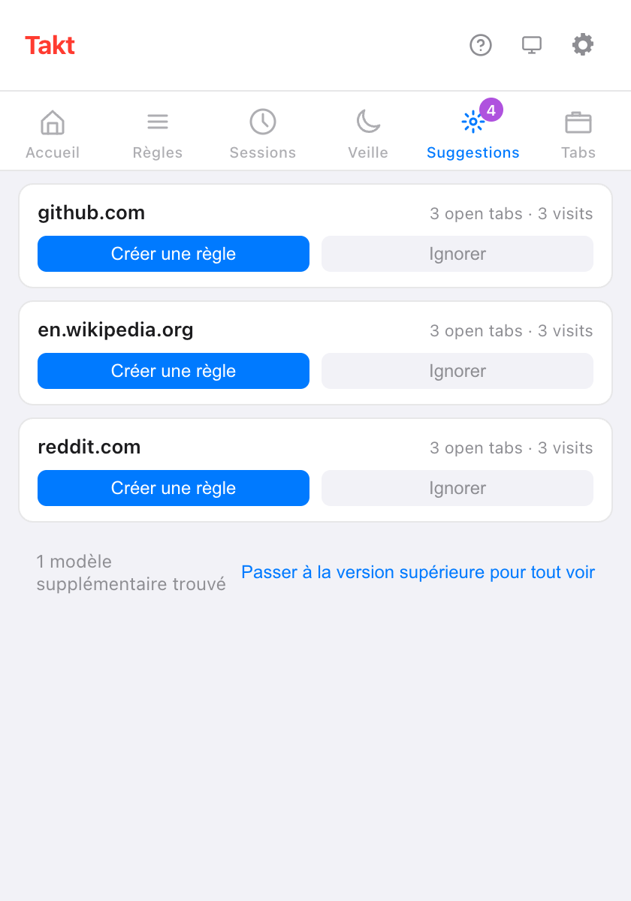
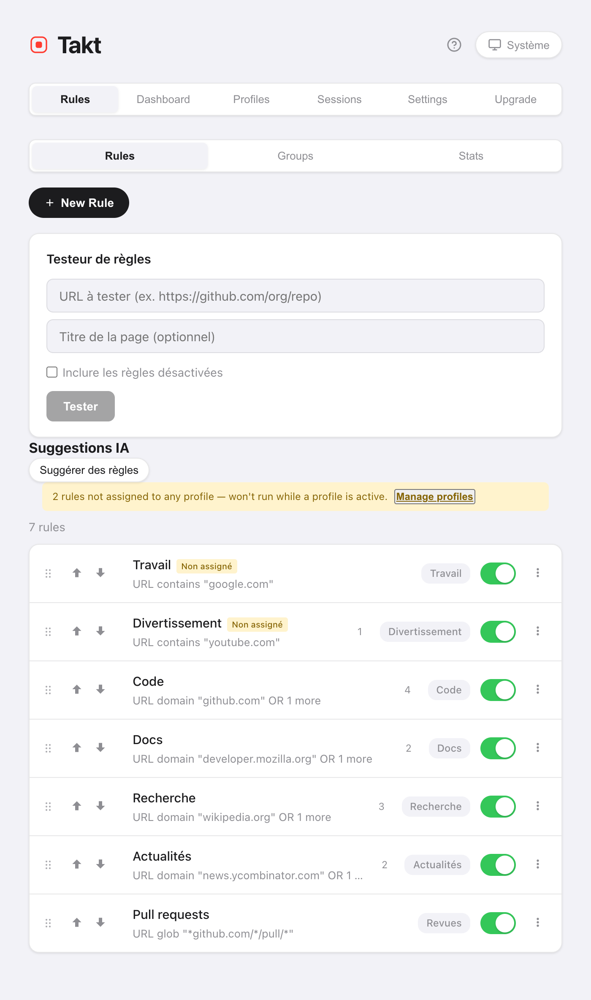

En bref : ouvrez le volet Suggestions du popup de Takt. Chaque carte correspond à un site que vous utilisez beaucoup et qui n'a pas encore de règle. Cliquez sur Créer une règle, vérifiez avec Aperçu des onglets correspondants, et enregistrez.
- Les suggestions viennent de vos onglets ouverts et de vos visites récentes, comptées sur votre appareil.
- Suggérer des règles demande à l'IA locale de Chrome de répartir vos sites ouverts en règles.
- Le Testeur de règles et les compteurs de correspondances montrent si une règle fait bien ce que vous vouliez.
D'où viennent les suggestions de règles ?
Takt repère les sites qui méritent clairement un groupe. Il y a trois sources :
| Source | Suggère un site quand | Où la voir | Plan |
|---|---|---|---|
| Onglets ouverts | 3 onglets ou plus de ce site sont ouverts ou en hibernation | Popup → Suggestions, Options → Rules | Free : 3 cartes à la fois |
| Visites récentes | Vous l'avez ouvert 5 fois ou plus, ou lors de visites réparties sur 2 jours ou plus, ces 7 derniers jours | Popup → Suggestions, Options → Rules | Free : 3 cartes à la fois |
| Suggestions IA | Vous cliquez sur Suggérer des règles | Options → Rules | Free, dans la limite de 5 règles |
Un site déjà couvert par une règle domaine ou contient n'est jamais suggéré. Ce que vous avez ignoré non plus.
Comment fonctionne le volet Suggestions ?
Chaque carte affiche un site et la raison de sa présence, par exemple « 3 onglets ouverts · 3 visites ». Deux boutons :
- Créer une règle ouvre l'éditeur de règles avec le site déjà renseigné. Rien n'est enregistré tant que vous n'avez pas validé la règle.
- Ignorer masque la carte. Les suggestions ignorées restent listées sur la page Rules des options, où vous pouvez les restaurer.
Avec le plan Free, vous voyez les 3 premières cartes et une ligne comme « 1 modèle supplémentaire trouvé ». Premium (3 $/mois ou 30 $/an) les affiche toutes.

Qu'enregistre Takt pour faire ses suggestions ?
Uniquement des noms de sites et des compteurs. En mode Par règles, quand un nouvel onglet ne correspond à aucune de vos règles, Takt ajoute une visite au compteur de ce site. Il conserve :
- le domaine, un nombre de visites, et la première et la dernière fois qu'il l'a vu ;
- les entrées des 7 derniers jours seulement, et 1 000 sites au maximum ;
- rien des fenêtres de navigation privée.
Ces données sont stockées dans le stockage local de l'extension dans Chrome et ne quittent jamais votre navigateur. Clear tab pattern history, dans Settings, les efface. Si vous accordez la permission facultative d'accès à l'historique de navigation, le nombre de visites de chaque carte vient plutôt de l'historique de Chrome sur les 90 derniers jours.
Que sont les suggestions de règles par IA ?
Sur la page Rules des options, Suggérer des règles envoie la liste des sites de vos onglets ouverts à la Prompt API intégrée à Chrome. Le modèle s'exécute sur votre appareil, regroupe les sites par thème et nomme chaque groupe. Seuls les noms de sites sont transmis : ni titres, ni contenu de page.
- Chaque suggestion propose Ajouter une règle et Ignorer. Ajouter une règle l'enregistre immédiatement, activée.
- La première exécution peut prendre une minute, le temps que Chrome prépare le modèle.
- Sur un appareil qui ne peut pas exécuter le modèle, vous voyez « Les suggestions IA ne sont pas disponibles sur cet appareil. »
- Avec le plan Free, vous obtenez autant de suggestions qu'il vous reste d'emplacements de règles gratuits, sur 5.
Comment tester une règle avant de m'y fier ?
Deux outils sur la page Rules des options :
- Testeur de règles. Collez une URL, et éventuellement un titre de page. Takt répond « Matches: règle → groupe » ou « Aucune règle correspondante ». Cochez Inclure les règles désactivées pour tester les règles que vous avez désactivées.
- Aperçu des onglets correspondants. Dans l'éditeur de règles, ce bouton liste les onglets ouverts que vos conditions non enregistrées capteraient, dans toutes les fenêtres. S'il n'y en a aucun, il affiche « Aucun onglet ne correspond à cette règle. »

Comment savoir si une règle fonctionne ?
Chaque règle de la liste indique combien d'onglets elle a rangés dans son groupe. Un onglet compte quand la règle le fait sortir des onglets non groupés.
La vue Stats ajoute les totaux : onglets organisés, onglets par jour, votre règle principale et vos 10 règles les plus utilisées. Une règle qui reste à zéro pendant une semaine mérite un second regard avec le Testeur de règles. Réinitialiser les statistiques remet les compteurs à zéro.
Puis-je créer une règle à partir de la page où je suis ? Premium
Oui. Faites un clic droit sur la page et choisissez Créer une règle à partir de cet onglet. Takt ouvre l'éditeur de règles avec un motif glob comme *://github.com/* déjà renseigné. Vérifiez-le et enregistrez.
Ce que les suggestions ne font pas
- Elles fonctionnent site par site. Takt ne suggérera pas « toutes les pull requests » de tous les dépôts. Pour cela, écrivez une règle glob ou regex (Premium).
- Les suggestions basées sur les onglets ouverts demandent 3 onglets d'un même site. Deux onglets ne font pas apparaître de carte.
- Les suggestions IA dépendent du modèle local de Chrome. Les machines anciennes ou peu puissantes n'y auront peut-être pas droit.
- Les suggestions alimentent le mode Par règles. Si vous préférez ne pas écrire de règles du tout, essayez le regroupement par catégorie ou par IA.
Ouvrez vos onglets comme d'habitude. Takt vous dira quelle règle écrire.
Ajouter Takt à Chrome, gratuitementQuestions fréquentes
Comment Takt choisit-il les règles à suggérer ?
Un site est retenu avec 3 onglets ouverts ou plus, ou avec 5 visites (ou des visites réparties sur 2 jours) ces 7 derniers jours, tant qu'aucune règle ne le couvre.
Les suggestions de règles sont-elles gratuites ?
Oui. Avec le plan Free, vous voyez 3 cartes à la fois dans le volet Suggestions, et des suggestions IA dans la limite de 5 règles. Premium (3 $/mois ou 30 $/an) les affiche toutes.
Les suggestions de règles par IA envoient-elles mes onglets quelque part ?
Non. Seuls les noms de sites de vos onglets ouverts sont transmis au modèle local de Chrome. Voir comment Takt garde vos données en local.
Puis-je récupérer une suggestion ignorée ?
Oui. La page Rules des options liste les suggestions ignorées, et vous pouvez les y restaurer.